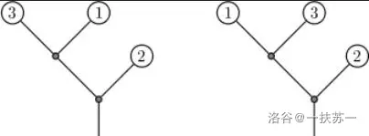

本题来源于：POI 2011 ROT - Tree Rotations
给定一颗有 个叶节点的二叉树。每个叶节点都有一个权值 （注意，根不是叶节点），所有叶节点的权值构成了一个 的排列。
对于这棵二叉树的任何一个结点，保证其要么是叶节点，要么左右两个孩子都存在。
现在你可以任选一些节点，交换这些节点的左右子树。
在最终的树上，按照先序遍历遍历整棵树并依次写下遇到的叶结点的权值构成一个长度为 的排列，你需要最小化这个排列的逆序对数。
第一行是一个整数 ，表示树的叶节点个数。
接下来若干行，使用递归的形式来读入这棵树，读入任意一个子树的信息时，初始时读入其根节点。对于一个结点 ，首先有一行一个整数 。
若 ，则表示 是一个叶节点，其权值为 。
若 ，则表示 不是叶节点，则接下来若干行读入其左子树信息，左子树读入结束后接下来若干行读入其右子树信息。
输出一行一个整数表示最小的逆序对数。
3
0
0
3
1
2
1
下图中，左图是初始读入的树，右图是操作后的树。

对于 的数据，保证 。
对于 的数据，保证 ， ，所有叶节点的权值是一个 的排列。
请注意， 不是树的结点个数。